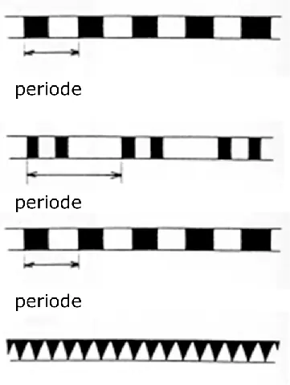

I Algemeen
Rijnvaartpolitiereglement 1995
1. Markeren
Op de Rijn worden de vaarweg, de vaargeul, alsmede de gevaarlijke punten en obstakels niet voortdurend gemarkeerd.
De drijvende tekens worden ongeveer 5 m buiten de grenzen die zijn aangegeven verankerd.
De kribben en strekdammen worden met behulp van drijvende of vaste tekens gemarkeerd, die in het algemeen vóór of op de koppen van de kribben of aan de uiteinden van de strekdammen worden geplaatst.
Een schip moet op voldoende afstand van de tekens blijven, daar anders het gevaar van raken of vastvaren bestaat.
2. Definities
Vaargeul: | gedeelte van de vaarweg waarin voor de doorgaande scheepvaart zoveel mogelijk een vastgestelde breedte en diepte in stand gehouden worden. |
Vaarwater: | Gedeelte van de vaarweg dat, al naargelang de lokale omstandigheden, door de doorgaande scheepvaart wordt gebruikt. |
Rechter-/Linkerzijde: | de aanduiding «rechterzijde» en «linkerzijde» van de vaarweg/ de vaargeul heeft betrekking op de richting «afvaart». |
Licht: | een licht met een bepaald karakter gebruikt als verkeersteken ter markering. |
Vast licht: | een licht van gelijkmatige kleur en sterkte dat een ononderbroken schijnsel toont. |
Periodelicht: | een licht van gelijkmatige kleur en sterkte dat regelmatig onderbroken wordt. |
De volgende periodelichten worden gebruikt:
- | onderbroken licht |  |
of een groep onderbroken lichten | ||
- | isofase licht | |
- | flikkerlicht |